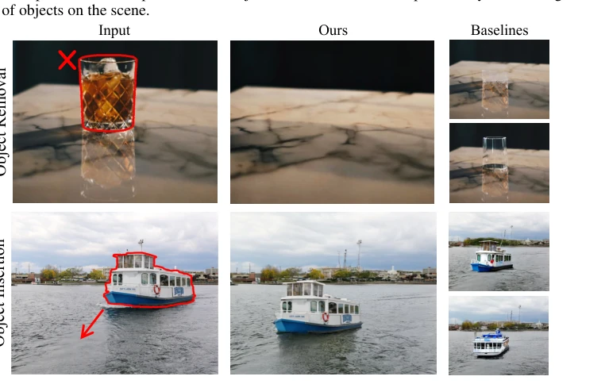
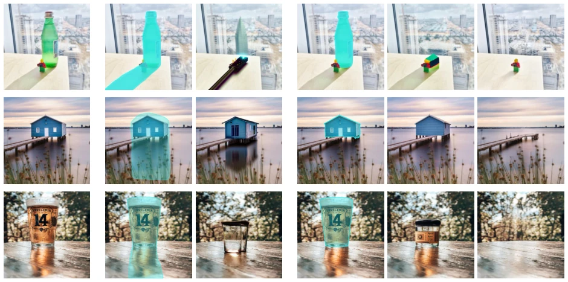
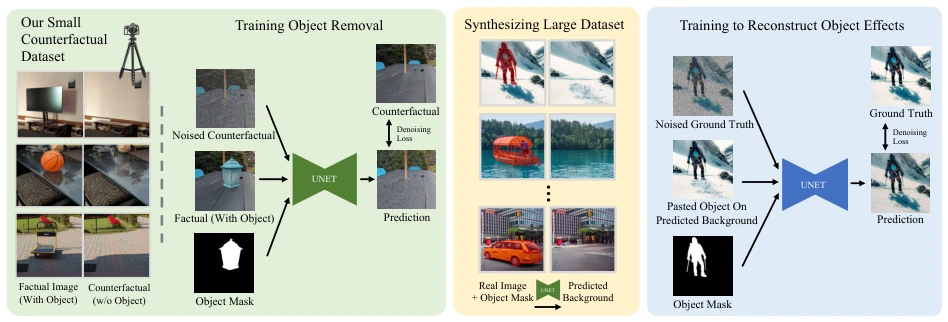
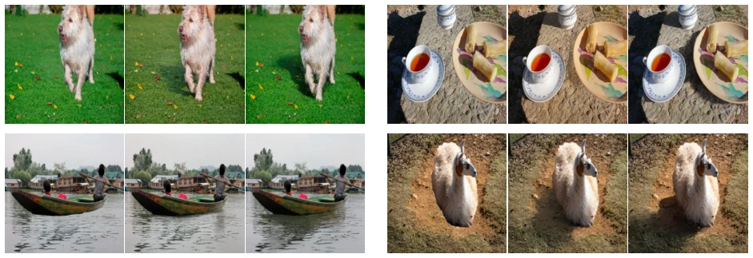
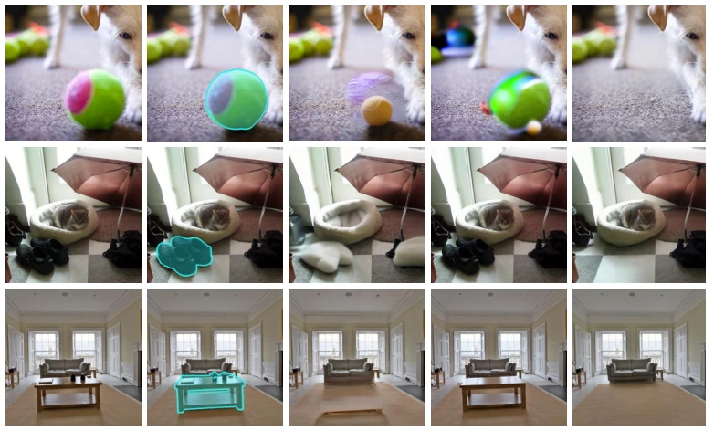
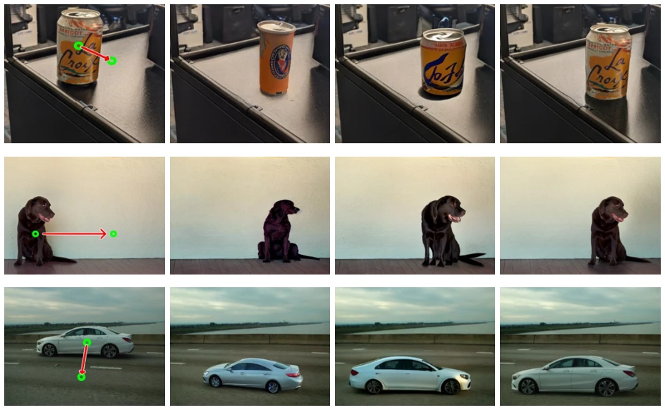
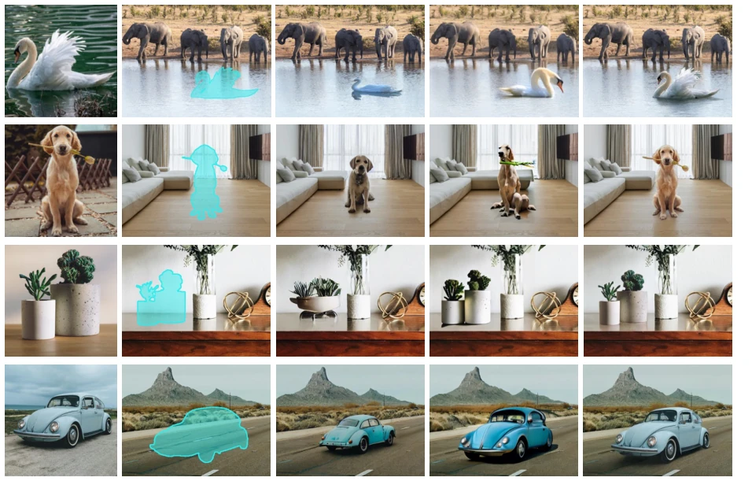
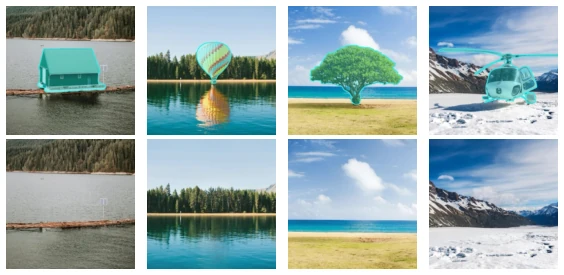
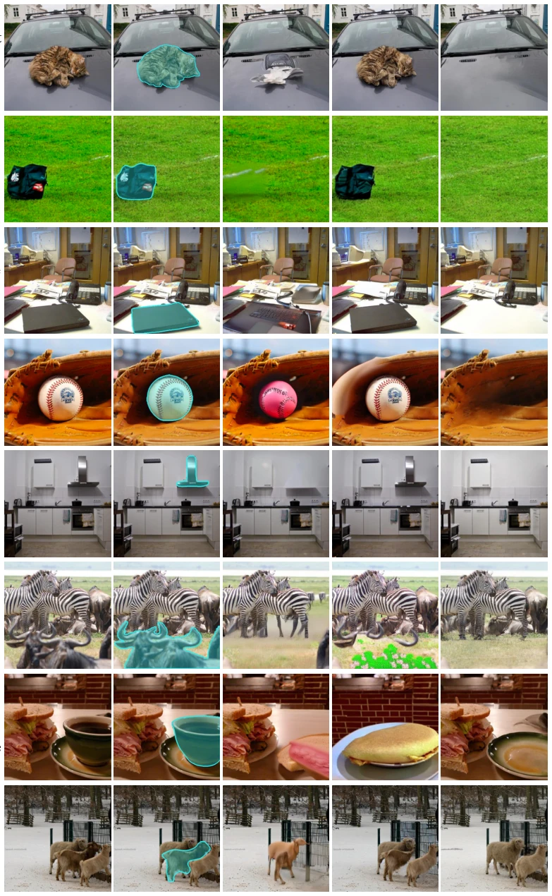
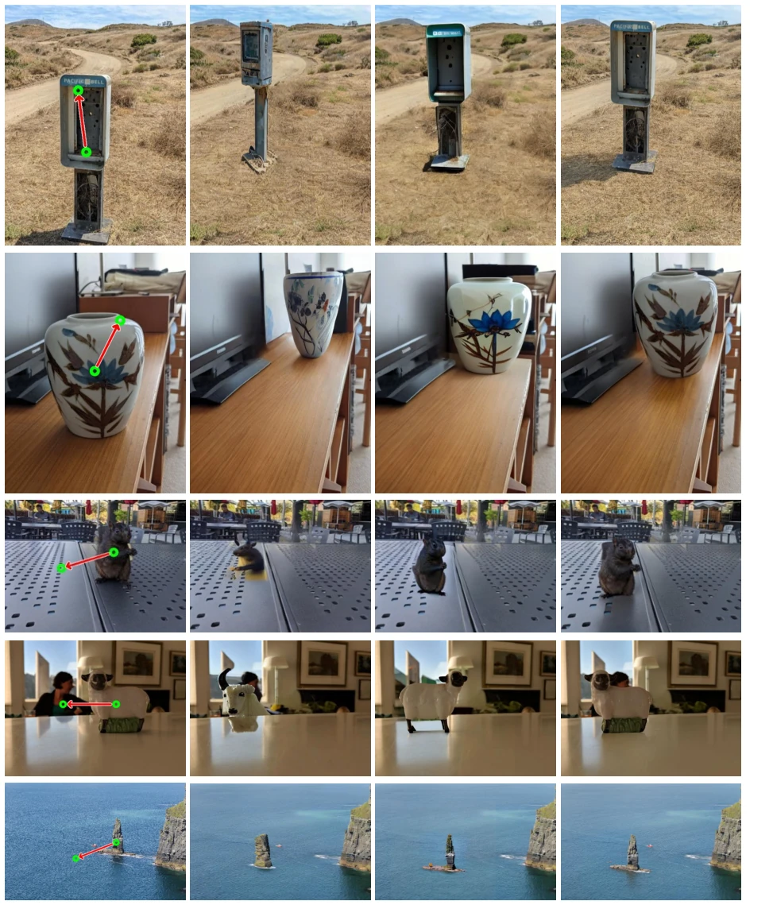

This paper finally exposes the 'physics illiteracy' of diffusion models. The Google team admits that although existing editing models produce aesthetically pleasing images, they lack understanding of the physical laws governing shadows and reflections, frequently generating images that violate physical laws. Instead of taking the detour of self-supervised learning, they straightforwardly collected 'counterfactual' datasets—comparative photos with and without objects. This approach is highly effective for object removal, but for object insertion, the data volume was insufficient, so they developed 'Guided Supervision (Bootstrap)', using the removal model to generate data itself. Although physical consistency is resolved, it still relies on manually collected initial data and cannot handle cases where objects are affected by scene lighting. Overall, this trades 'hard work' for 'real results', representing a refreshing approach in the editing field plagued by physical hallucinations, but the cost remains high, and limitations persist for large or immovable objects.
The research motivation targets the physical defects of diffusion models in image editing. Although diffusion-based editing improves aesthetic quality, it often violates physical laws, such as ignoring object occlusion of the scene, shadows, and reflections [1]. Existing self-supervised methods attempt to decouple physical objects and scenes through observation data, but studies show that prior-free decoupling cannot be achieved solely based on observation data [17, 22, 33]. General editing models such as Emu Edit [46] and MGIE [9] often replace objects or introduce unexpected changes. Shadow removal methods [6, 12] only handle shadows and cannot handle reflections. Therefore, a method capable of modeling the physical interaction between objects and scenes is needed, understanding 'what if the object did not exist, what would the scene be like' through counterfactual reasoning. Video supervision is cheap but suffers from spurious correlations caused by viewpoint changes [24].

Figure 1: Object removal and insertion. Our method models the effect of an object on the scene including occlusions, reflections, and shadows, enabling photorealistic object removal and insertion. It significantly outperforms state-of-the- art baselines.

Figure 4: Object removal - comparison with inpainting. Our model successfully removes the masked object, while the baseline inpainting model replaces it with a different one. Using a mask that covers the reflections (extended mask) may obscure important details from the model.
The method is divided into two steps. First, construct a 'counterfactual' dataset: photographers shoot image pairs containing objects (factual) and object-removed (counterfactual) at a fixed camera position, totaling 2,500 pairs. Use this dataset to fine-tune the diffusion model for object removal, where the input is the factual image and mask, and the output is the counterfactual image, without replacing object pixels with gray. Second, solve the insertion task; due to insufficient real data, propose Bootstrap supervision. Use the trained removal model to process large-scale unlabeled images to generate 'object-free background + object' synthetic data, with the target being the original image containing the object. Pre-train the insertion model with this synthetic data, then fine-tune on the original small dataset. The pipeline is clear: Physical collection -> Removal model training -> Synthetic data generation -> Insertion model training.

Figure 3: Overview of our method. We collect a counterfactual dataset consisting of photos of scenes before and after removing an object, while keeping everything else fixed. We used this dataset to fine-tune a diffusion model to remove an object and all its effects from the scene. For the task of object insertion, we bootstrap bigger dataset by removing selected objects from a large unsupervised image dataset, resulting in a vast, synthetic counterfactual dataset. Training on this synthetic dataset and then fine tuning on a smaller, original, supervised dataset yields a high quality object insertion model.

Figure 8: Bootstrapping ablation. Bootstrap supervision improves model quality.
Experiments are conducted on 2,500 pairs of real counterfactual data and 350,000 synthetic data. Baselines include Emu Edit [46], MGIE [9], Paint-by-Example [57], AnyDoor [4]. Metrics cover PSNR, DINO, CLIP, LPIPS. Results show ObjectDrop significantly outperforms baselines on both removal and insertion tasks, especially in the generation of shadows and reflections. User studies also indicate higher preference. Ablation experiments prove Bootstrap is crucial for insertion quality, and 2,500 real images can already achieve good removal effects, with more data further improving performance. The model can also generalize to unseen objects, such as buildings.

Figure 5: Object removal - comparison with general editing methods. We compare to general editing methods: Emu Edit and MGIE. These methods often replace the object with a new one and introduce unintended changes to the input image. For this comparison we used a text-based segmentation model to mask the object according to the instruction and passed the mask as input to our model.

Figure 6: Intra-image object insertion - baseline comparison. We preserve the object identity better and achieve more photorealistic shadows and reflections than baselines Paint-by-Example and AnyDoor.

Figure 7: Cross-image object insertion. Similarly to the results of intra-image object insertion, our method preserves object identity better and synthesizes more photorealistic shadows and reflections than the baselines.
其他图片Other Figures

Figure 2: Generalization. Our counterfactual dataset is relatively small and was captured in controlled settings, yet the model generalizes exceptionally well to out-of-distribution scenarios such as removing buildings and large objects.

Figure 11: Additional examples for comparison with general editing methods, Emu Edit and MGIE. In this comparison, we utilized a text-based segmentation model to generate a mask for the object based on given instructions, which was then used as input for our model.

Figure 12: Additional examples of inta-image object insertion.